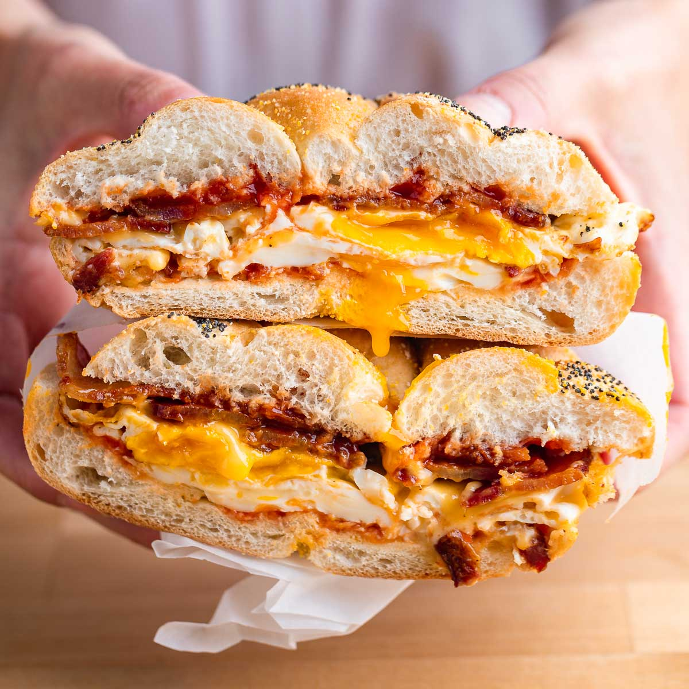

Bacon Egg and Cheese

Description
Whether you get yours at a deli, from a coffee shop, or just make it at home, the bacon, egg, and cheese sandwich checks all the boxes: Protein, fat, carbs. Salty, rich, gooey, crispy. And above all, a good BEC is deeply satisfying—a welcome cure for everything from a hangover to heartbreak.
Ingredients
- 6 slices thick-cut bacon (about 6 ounces; 170g)
- 1 tablespoon (14g) unsalted butter
- 2 large eggs (110g)
- 2 slices American cheese
- Kosher salt and freshly ground black pepper
- 1 kaiser roll or bulkie roll
- 1 tablespoon mayonnaise, optional
Steps
- Adjust oven rack to middle position and heat oven to 400°F (205°C). Line a rimmed baking sheet with aluminum foil. Cut 3 slices of bacon in half crosswise and set aside.
- Place 3 whole slices of bacon side-by-side on the prepared baking sheet running parallel to counter edge, forming three rows. Fold over half of the center bacon strip halfway. Place 1 half-slice bacon across the 1st and 3rd row, running perpendicular to counter edge, then unfold the center slice over top the perpendicular strip. The half-slice should be woven between every other slice. Fold over 1st and 3rd whole slices until flush with perpendicular half-slice and lay another perpendicular half-slice of bacon across the center row. Repeat, alternating between folding back the center then the 1st and 3rd strips and laying remaining half strips across until all 6 half-slices of bacon have been used to create an interwoven pattern.
- Bake bacon until crisp, 25 to 35 minutes. Using 2 spatulas, transfer bacon, flat bottom side up, to a paper-towel lined plate to drain. Pour rendered bacon fat into a small bowl and set aside (you should have about 2 tablespoons/30g). Once bacon is cooled, use a sharp knife to cut bacon into 2 equal squares; set aside.
- In a small bowl, use a fork to beat eggs until they are just combined but still streaky, about 10 seconds. In a 10-inch nonstick skillet, melt butter over medium heat until it starts to foam and sizzle gently. Pour eggs into skillet, and tilt pan to distribute eggs evenly. Cook eggs, gently pushing sides of egg toward center, tilting pan to fill any gaps, until eggs are nearly cooked but surface is barely wet, 60 to 90 seconds. Reduce heat to low and place one slice of cheese in center of eggs. Using a flat spatula, with the cheese as a guide, fold edges of eggs over cheese, creating a square packet. Gently press eggs to adhere to cheese, then carefully flip the packet over. Place remaining cheese slice on top of eggs, cover, and cook until cheese is melted, about 60 seconds longer. Season with salt and pepper to taste. Transfer eggs to plate with bacon. Wipe skillet clean with paper towels.
- In now-empty skillet, heat 1 tablespoon reserved bacon fat over medium heat until shimmering. Place one bread half in pan, cut-side down and cook, pressing and swirling bread around pan with hand, until bread is golden brown and evenly toasted, 60 to 90 seconds. Transfer toasted bread to cutting board, toasted side up. Repeat with remaining 1 tablespoon bacon fat and bread half.
- To Assemble: Spread mayonnaise, if using, evenly over both toasted bun halves. Place bacon squares on bottom bun and top with egg-cheese packet. Top with bun half and gently press to adhere. Wrap sandwich in foil sandwich wrap and let sit for up to 5 minutes. Serve.